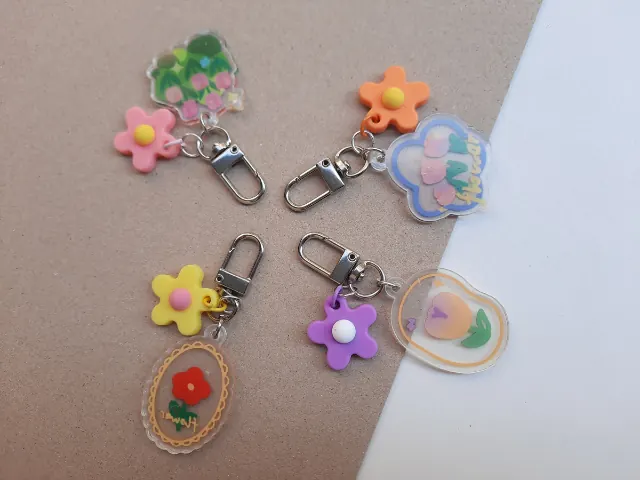

Op zoek naar originele én praktische manieren om je bedrijf in Nijmegen zichtbaar te maken?
Gepubliceerd op 14 oktober 2025
Onderdeel van de gids Ondernemen in Nijmegen

Je hoeft echt niet groot te denken om impact te maken. Een slimme manier om je merk of boodschap onder de aandacht te brengen, is via sleutelhangers bedrukken. Het klinkt simpel, maar juist dát maakt het zo krachtig. Iedereen gebruikt dagelijks een sleutelbos, dus waarom zou je daar niet handig op inspelen?
In een stad als Nijmegen, waar het bruist van de ondernemers en creatieve initiatieven, is het belangrijk om nét even anders te zijn. Je hoeft niet met lichtgevende billboards te strooien om op te vallen. Kleine, slimme keuzes werken vaak beter, zeker als ze bruikbaar zijn in het dagelijks leven. Een sleutelhanger met een leuke vorm of boodschap, subtiel voorzien van je bedrijfsnaam, blijft niet onopgemerkt.
Hoe blijf je zichtbaar zonder opdringerig te zijn?
Zichtbaarheid draait al lang niet meer om het hardste roepen. Het gaat juist om relevant zijn op het juiste moment. Iets meegeven dat mensen écht gebruiken, voelt veel persoonlijker dan een flyer of een standaard pen. Denk bijvoorbeeld aan sleutelhangers die ook dienstdoen als winkelwagenmuntje of flesopener. Je geeft iets weg waar iemand echt wat aan heeft, en je blijft top of mind, zonder dat je steeds aan het trekken hoeft te zijn.
Daarnaast is het fijn dat je met een bedrukte sleutelhanger makkelijk kunt variëren. Je kunt ze personaliseren per doelgroep, actie of moment. Ideaal als je lokaal actief bent in Nijmegen en bijvoorbeeld aanwezig bent op markten, evenementen of netwerkborrels. Eén keer uitdelen en je boodschap reist voortaan gewoon mee in de broekzak van je doelgroep.

Liever iets duurzaams en sportiefs?
Wie iets meer wil opvallen én meteen duurzaamheid wil uitstralen, kan ook denken aan waterflessen bedrukken. Deze zie je steeds vaker op kantoren, scholen en sportscholen in en rond Nijmegen. En terecht: het is een duurzaam en gezond alternatief voor wegwerpflessen, en het laat zien dat je als bedrijf bewust bezig bent. Bedrukte waterflessen zijn dus niet alleen praktisch, ze vertellen ook een verhaal.
De juiste give-away doet veel. Het zorgt voor herkenning, sympathie en zichtbaarheid, zonder dat het commercieel aanvoelt. En laten we eerlijk zijn, dat is precies wat je wilt als lokale ondernemer of organisatie.
Terug naar de beginpagina